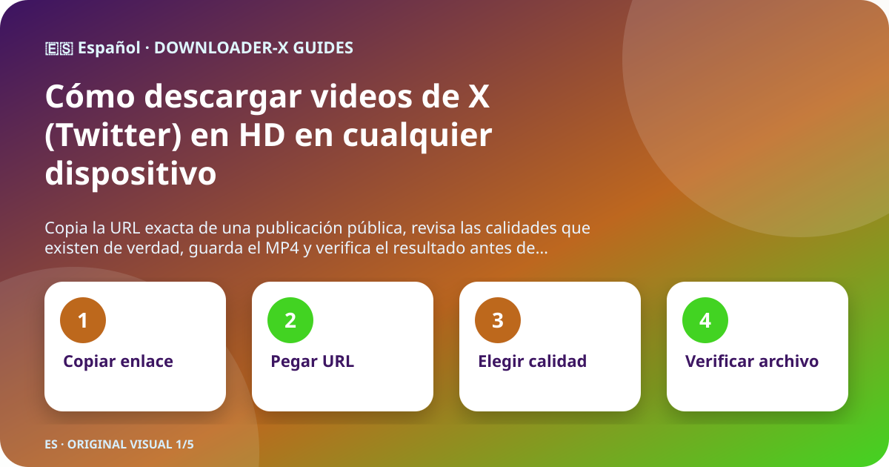
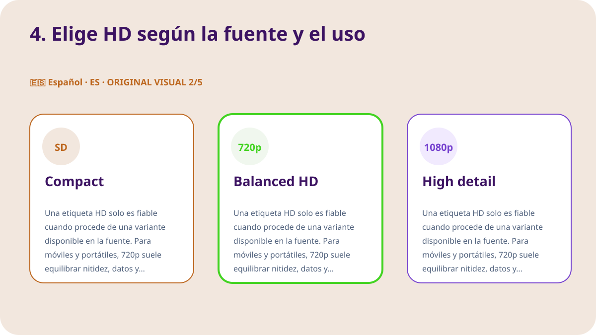
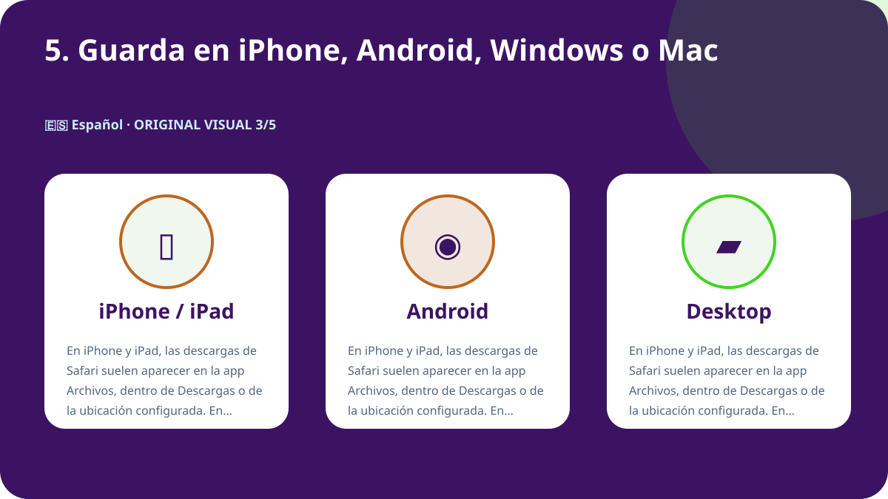
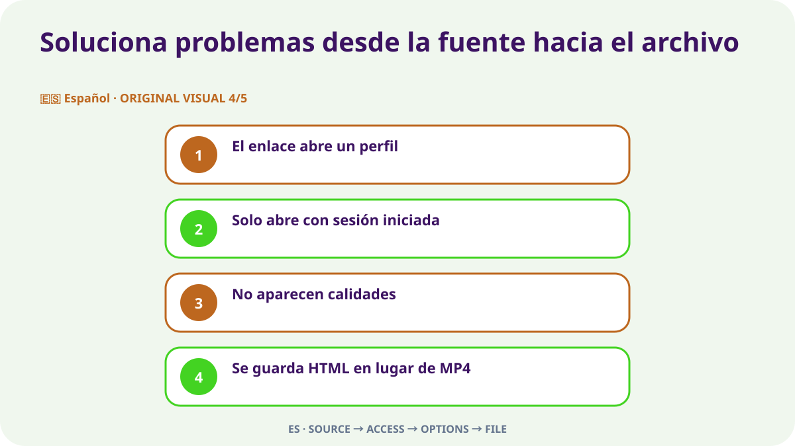

Respuesta rápida
Abre la publicación individual de X que contiene el video, comprueba que sea pública y usa Compartir para copiar el enlace de la publicación. Pega esa URL en Downloader-X, selecciona una variante MP4 que aparezca realmente en el resultado y reproduce el archivo después de guardarlo. Utiliza este procedimiento solo con videos propios, contenido con una licencia compatible o material para el que tengas autorización. Un descargador de enlaces públicos no debe pedir la contraseña de X, códigos de verificación, cookies del navegador ni acceso remoto al dispositivo.

1. Comprueba el acceso público y tus derechos
Trabaja desde la publicación original, no desde un perfil, una búsqueda, una captura o una vista previa reenviada. Abre la URL en una pestaña nueva y compara la cuenta, el texto, la miniatura y la duración. Que una publicación sea visible públicamente no significa que el video pueda republicarse, editarse, venderse o usarse en publicidad. Si la cuenta está protegida, la publicación fue eliminada, exige acceso especial o tiene una restricción, detente y solicita una copia autorizada al propietario en lugar de intentar eludir el control.
Derechos de autor, consentimiento y crédito
La visibilidad pública es una condición de acceso, no una licencia. Guarda contenido propio, material con licencia compatible o videos para los que tengas permiso claro. Para republicar, editar o utilizar comercialmente, comprueba que la autorización cubra ese uso y conserva una prueba escrita. Respeta a las personas que aparecen en el clip, la información privada y los lugares sensibles, especialmente cuando participan menores, y nunca presentes la obra de otra persona como propia.
2. Copia la URL correcta de la publicación
El enlace debe identificar una sola publicación con el video. Usa el menú Compartir de X y selecciona Copiar enlace de la publicación. Después ábrelo una vez en otra pestaña para confirmar el destino. Este control sencillo evita confundir un enlace incorrecto con un fallo del servicio y reduce los intentos repetidos que pueden producir archivos incompletos o duplicados.
- Abre la publicación original y entra en su página individual.
- Pulsa Compartir y copia el enlace en lugar de escribirlo manualmente.
- Comprueba que el dominio sea x.com o twitter.com y que la URL identifique una publicación.
- Prueba el enlace en una pestaña nueva y confirma cuenta, texto y video.
- Conserva la URL de origen y la prueba de permiso junto al archivo.
3. Pega el enlace y revisa el resultado real
Pega la URL verificada en el descargador de X e inicia el análisis una sola vez. Espera a que aparezcan las opciones y compara el título o la vista previa con la publicación original. Elige únicamente formatos y resoluciones que el resultado muestre de verdad. No des por válida una promesa de 4K, 1080p o ausencia de marca de agua si la fuente no ofrece esa variante. Cuando el proceso falla, el sistema debe mostrar un error claro; no debería presentar una página HTML, un instalador o un archivo incorrecto como si fuera un video terminado.
Demostración original en español
Este video se creó específicamente para esta versión y utiliza imágenes, texto y colores distintos de los demás idiomas.
4. Elige HD según la fuente y el uso
Una etiqueta HD solo es fiable cuando procede de una variante disponible en la fuente. Para móviles y portátiles, 720p suele equilibrar nitidez, datos y almacenamiento. 1080p puede resultar útil en pantallas grandes si la publicación lo proporciona realmente. Dos archivos con la misma resolución pueden tener distinto bitrate, códec o nivel de compresión, por lo que conviene reproducirlos y no juzgarlos solo por el nombre. Si necesitas sonido, selecciona una opción combinada de video y audio o comprueba inmediatamente que el archivo incluye la pista esperada.

5. Guarda en iPhone, Android, Windows o Mac
En iPhone y iPad, las descargas de Safari suelen aparecer en la app Archivos, dentro de Descargas o de la ubicación configurada. En Android, revisa el gestor de descargas del navegador o la aplicación Archivos. En Windows, macOS, Linux y ChromeOS, consulta la carpeta Descargas y el historial del navegador antes de volver a pulsar. Si falta espacio, elimina copias innecesarias o elige una resolución menor. No instales administradores de descarga desconocidos solo porque una página diga que son obligatorios.

6. Verifica el archivo guardado
La tarea termina cuando el video se abre correctamente, no cuando desaparece la barra de progreso. Revisa estos puntos antes de archivar o compartir el archivo:
- El tipo coincide con el video elegido, por ejemplo MP4, y no es HTML ni un instalador.
- El tamaño no es cero y resulta razonable para la duración y la calidad.
- El inicio, el centro y el final reproducen imagen, duración y audio correctamente.
- El nombre, la carpeta, la URL de origen y el permiso están documentados.
Audita la fuente antes de conservar el archivo
Para un proyecto con varios clips, registra la cuenta, la fecha visible, la URL permanente, una descripción breve, la variante seleccionada, el tamaño y la base de autorización. Así evitas archivos sin procedencia y puedes revisar después la atribución o la licencia. En publicaciones citadas, respuestas o hilos, asegúrate de copiar el enlace de la publicación que contiene realmente el video, no el de una publicación que solo lo menciona o lo cita.
Soluciona problemas desde la fuente hacia el archivo

El enlace abre un perfil
Vuelve al video y copia la URL desde Compartir; un perfil no identifica un medio concreto.
Solo abre con sesión iniciada
Puede ser contenido protegido o restringido. No compartas credenciales ni cookies; pide una copia autorizada.
No aparecen calidades
Confirma que la publicación exista, contenga video nativo y abra con la URL copiada; actualiza una vez.
Se guarda HTML en lugar de MP4
Elimina el archivo, no cambies su extensión y repite la comprobación del enlace y del resultado.
El video no tiene sonido
Comprueba el original y otro reproductor; si elegiste video sin audio, selecciona una variante combinada cuando exista.
Seguridad y privacidad
Un flujo para enlaces públicos no debería exigir contraseña, código de dos factores, cookies exportadas, control remoto, una aplicación ejecutable ni la desactivación de la protección del dispositivo. Detente si una página intenta entregar un .exe, .dmg o una extensión ajena al video. Comprueba el dominio y el tipo de archivo antes de abrirlo. En equipos compartidos, mueve los archivos autorizados fuera de carpetas públicas y elimina las copias temporales que ya no sean necesarias.
Organiza los archivos y evita duplicados
Usa un nombre con tema, cuenta, fecha y calidad, por ejemplo tema_creador_2026-08-30_720p.mp4. Separa los archivos temporales de los verificados y conserva solo las variantes necesarias. Pulsar varias veces no mejora la imagen; normalmente crea nombres duplicados o descargas parciales. Guarda la URL, la atribución y las condiciones de uso en una nota o una hoja de cálculo dentro del mismo proyecto.
Lista final de 60 segundos
- La URL abre la publicación correcta.
- La publicación es pública sin eludir controles.
- Eres propietario o tienes permiso para guardar el video.
- El servicio no solicita credenciales ni cookies.
- La calidad seleccionada aparece en el resultado real.
- El dispositivo tiene almacenamiento suficiente.
- El tipo y el tamaño del archivo son razonables.
- La imagen y el audio se reproducen completos.
- La fuente y el crédito están documentados.
- El uso posterior no supera la autorización.
Preguntas frecuentes
¿Sirven los enlaces de x.com y twitter.com?
Sí, cuando ambos llevan a la misma publicación pública y has comprobado el destino.
¿Por qué no siempre aparece 1080p?
Porque las resoluciones dependen del archivo fuente y de las variantes realmente disponibles.
¿Puedo descargar una cuenta protegida?
No. Esta guía no ayuda a eludir controles y cubre únicamente publicaciones públicas.
¿Dónde está el archivo en iPhone?
Normalmente en la app Archivos, dentro de Descargas o de la ubicación definida en Safari.
¿Qué hago si recibo HTML?
Elimínalo, no lo renombres y vuelve a comprobar la URL y la opción de video.
¿Una publicación pública permite republicar?
No. Necesitas una licencia o permiso que cubra la redistribución y el uso previsto.
Otros idiomas y guías relacionadas
Empieza con una URL pública verificada
Pega la publicación correcta, elige solo una calidad disponible y comprueba el archivo antes de usarlo.
Usar Downloader-X para X